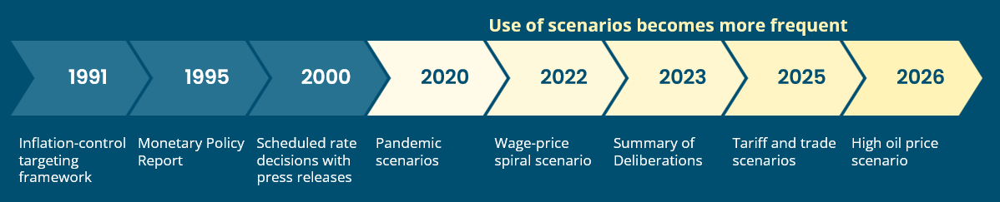
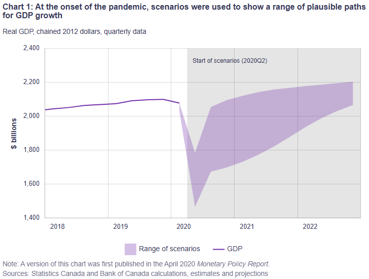
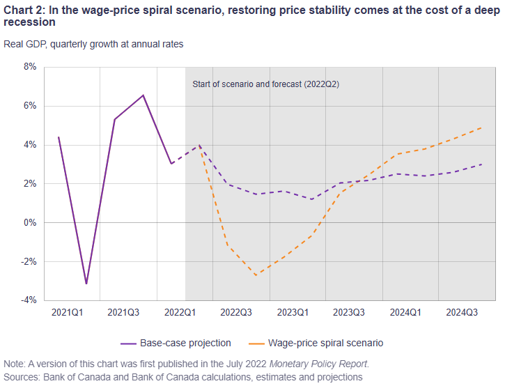
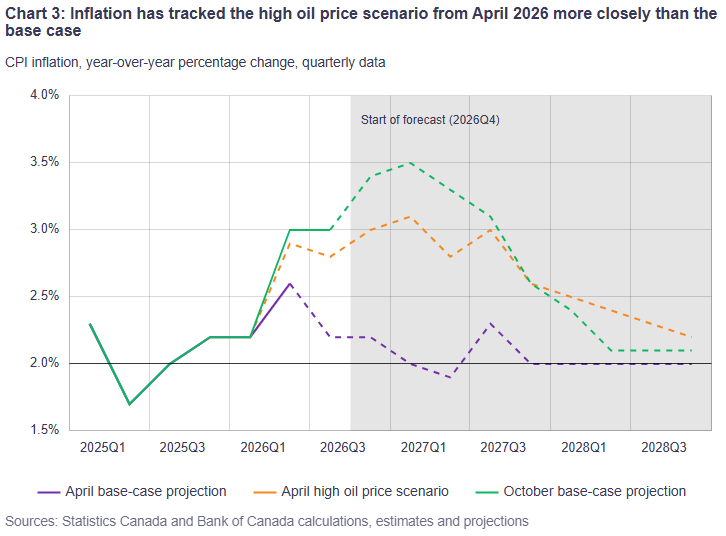

从预测未来到准备未来：加拿大央行如何沟通不确定性
当能源价格、贸易政策和通胀预期同时变化时，一条清晰的利率路径也可能迅速失去适用条件。对央行而言，沟通的难点不仅是说清楚下一步可能做什么，更是解释：哪些变化会让下一步有所不同。
加拿大央行副行长 Toni Gravelle 在2026年11月18日于埃德蒙顿商会发表的讲话中，将情景分析放在了这一问题的中心。本文依据该讲话原文作专题解读；文中历史案例和情景参数均按讲话当时的口径呈现。它们不是本文对未来油价、通胀或利率的预测。
央行为什么需要让市场理解它的判断
政策利率调整影响经济需要时间，因此央行必须向前看。基准预测给出增长与通胀最可能的路径，但这条路径依赖一组条件；当条件改变，政策判断也可能改变。
讲话解释了沟通影响经济的传导链：加拿大央行直接控制的是隔夜利率目标，而家庭和企业的消费、储蓄及投资决策往往受到更长期利率的影响。长期利率又受到市场对未来政策利率的预期影响。让市场理解央行如何回应经济变化，有助于政策信号沿着这条链条传递。
这种理解不是记住某一句政策措辞，而是理解央行如何使用数据、评估风险并更新判断。经济学上通常将这种政策反应方式称为“反应函数”。它并非一条可以机械套用的固定公式，也包含决策者对风险与不确定性的判断。

图1：加拿大央行沟通工具的演进。原图出自讲话PDF第4页，保留英文内容。
前瞻指引为什么必须保留条件
讲话区分了非常规前瞻指引与常规前瞻指引。前者用于危机时期、利率已处于最低可行水平的特殊情况；后者包括关于利率可能方向的表述，也包括公布政策利率路径等做法。
争议集中在明确程度上。更明确的指引能够帮助市场预判政策，但也可能让市场把一个有条件的判断当成承诺。如果投资者过度依赖央行信号，对新数据的反应反而可能减弱。
这也会影响央行自身的信息来源：市场价格若越来越像央行表述的回声，就较难独立反映投资者对经济的判断。
情景分析提供了一种补充。它可以把政策指引背后的条件展示出来：如果冲击持续得更久、通胀预期变化，或者家庭与企业改变行为，增长、通胀以及政策反应会怎样不同。
三种案例展示情景分析的用途
疫情初期：为无法确定的未来划出范围
在疫情初期，经济活动突然停摆，历史经验难以支持可靠的基准路径。讲话将这类极端情况称为“奈特式不确定性”。加拿大央行因此采用不同情景，展示可能结果的范围。
这里的用途是让公众理解已知与未知，而不是赋予每一种结果看似精确的概率。讲话也强调，用情景替代基准预测只适用于极端不确定时期；通常情况下，情景与基准预测并列发布。

图2：疫情时期的情景分析。对应原文 Chart 1，出自PDF第7页。
工资与价格：同一个冲击可能引发不同的行为反应
2022年7月的《货币政策报告》曾讨论工资—价格螺旋情景：企业预期高通胀持续而继续提价，劳动者为维持购买力要求加薪，成本增加又推动进一步提价。价格、工资和通胀预期相互强化。
在该情景下，打破循环需要更高的政策利率，并会导致严重衰退。讲话明确指出，这一情景并未在2022年成为现实。它的价值在于解释需要防范什么，以及为什么预期与行为的变化会使高通胀更难消退。

图3：工资—价格螺旋情景。对应原文 Chart 2，出自PDF第8页。该图展示风险情景，不应被读作已发生的结果。
油价冲击：基准假设如何接受现实检验
按讲话所述，2026年4月油价约为每桶100美元，当时基准假设是到2027年年中回落至约75美元，并据此预计通胀在2027年初回到2%的目标。
替代情景则追问：如果油价没有如期回落，会发生什么？在4月的高油价情景中，通胀在超过一年的时间里保持接近3%，需要连续提高政策利率才能使其回到目标。
讲话回顾，到10月决策时，油价仍接近每桶100美元，油价与通胀的走势更接近4月的高位持续情景。这一案例展示了情景分析怎样帮助公众理解基准判断之外的风险。它并不意味着只要油价达到某个水平，就能机械推出一条确定的利率路径。

图4：油价与通胀的情景比较。对应原文 Chart 3，出自PDF第9页。参数及观察时点均以讲话为准。
企业和市场怎样使用这些信息
从上述框架出发，阅读央行文件时，可以把关注点从单一数字扩展到数字成立的条件。以下是本文基于讲话框架提出的阅读方法，而非加拿大央行给出的投资建议。
| 阅读对象 | 应追问的问题 | 容易出现的误读 |
|---|---|---|
| 基准预测 | 哪些能源、需求和外部环境假设支撑这条路径？ | 将最可能结果当成必然结果 |
| 替代情景 | 什么条件触发偏离？冲击持续多久？ | 把风险情景直接当作最新基准预测 |
| 政策指引 | 哪些数据或行为变化会改变政策反应？ | 把有条件的信号当成不可更改的承诺 |
| 后续数据 | 现实更接近哪组条件，原有假设是否仍然有效？ | 只比较最终数字，不检查假设变化 |
对企业来说，这种阅读方式也能用于自身预算。销售、融资和成本计划通常都包含对未来的判断；把关键条件单独列出，有助于识别什么变化会使原计划失效。情景的作用是提前准备应对方式，而不是制造更多看似精确的预测。
透明的边界与可信度
更多情景并不总意味着更好的沟通。讲话提醒，情景最有用的场合是极端不确定时期，或某项重大风险难以仅用文字解释时。一次发布过多情景，可能掩盖最重要的风险，也可能模糊决策机构认定最可能发生的基准路径。
可信度同样不等于永远预测正确。讲话将其与透明、问责和持续追求政策目标联系起来：央行需要解释自己如何思考，公众才能判断其行动是否符合目标。当公众相信通胀将回到目标附近，这种信任也会影响定价和预期，从而影响政策效果。
对市场而言，值得持续跟踪的是条件与判断之间的关系：原先的假设是否仍成立，风险是否正在显现，央行是否清楚解释了政策为什么需要变化。在冲击频繁的环境里，这比把一次预测当作固定路线更有用。
来源与图表
主要依据：加拿大央行副行长 Toni Gravelle 于2026年11月18日发表的讲话，Setting the scenario: Monetary policy communications in uncertain times。原始PDF。
四幅图表均来自上述讲话PDF，保留原图，不改写图内数据。中文正文为专题解读，并非加拿大央行官方中文译本。文中的阅读方法及企业应用讨论为本文分析，不代表加拿大央行立场。